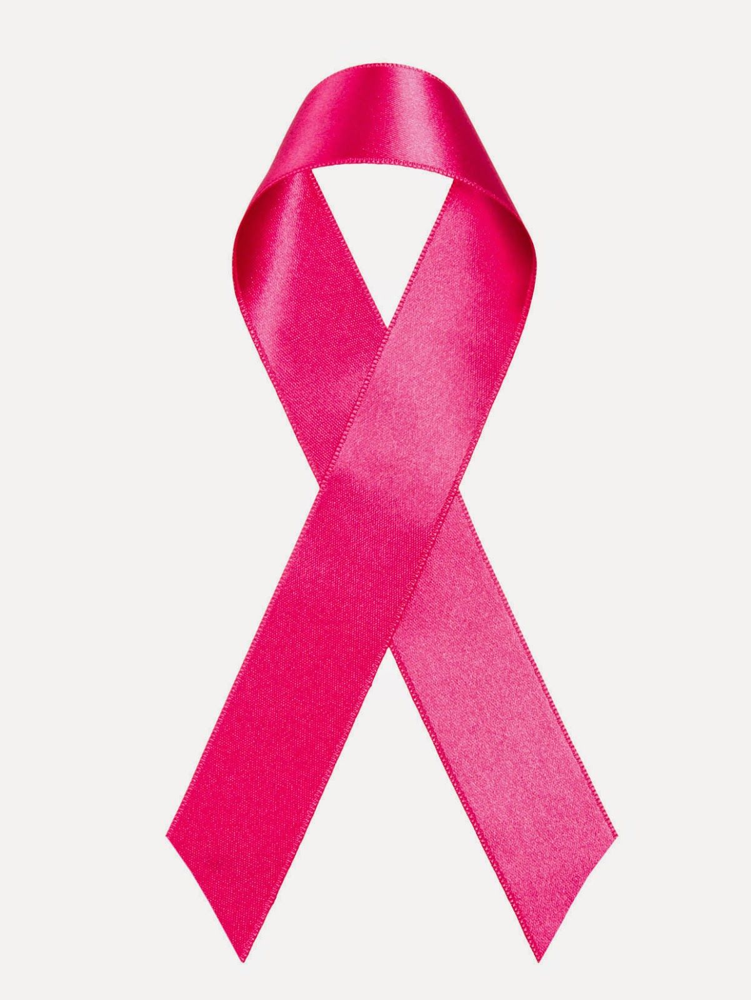

Juntos, somos mais fortes na luta contra o câncer de mama. Vamos colorir o mundo de esperança e apoio neste Outubro Rosa.
O que é o Outubro Rosa?
O Outubro Rosa é uma campanha de conscientização sobre o câncer de mama que ocorre anualmente durante o mês de outubro em todo o mundo. O principal objetivo do Outubro Rosa é aumentar a conscientização sobre a importância da prevenção, diagnóstico precoce, tratamento e apoio às pessoas afetadas por essa doença, especialmente o câncer de mama.